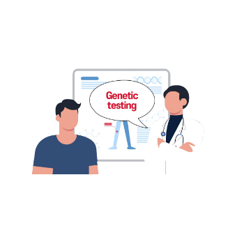

세상에 존재하는 여러 질병 중 희귀질환은 알려진 것만 7천 가지가 넘습니다.
각 질환은 증상이 다양하면서, 알려진 정보는 부족하기 때문에 진단이 어렵다는 한계가 있습니다.
쓰리빌리언은 유전자검사를 통해 환자들이 어려움을 극복 할 수 있도록 돕고 있습니다.
내가 아픈 이유는 뭘까,
내가 걸린 병의 이름은 무엇일까,
여전히 해답을 찾지 못하고 계신가요?
세상에 존재하는 여러 질병 중 희귀질환은 알려진 것만 7천 가지가 넘습니다.
각 질환은 증상이 다양하면서, 알려진 정보는 부족하기 때문에 진단이 어렵다는 한계가 있습니다.
쓰리빌리언은 유전자검사를 통해 환자들이 어려움을 극복 할 수 있도록 돕고 있습니다.
희귀질환의 약 80%를 차지하는 유전성 희귀질환을 진단할 수 있습니다.
증상만으로 정확한 진단이 어려운 경우, 유전적 정보를 고려해 진단을 도울 수 있습니다.
정확하고 신속한 진단을 통해 적절한 치료와 관리 방법을 도입할 수 있습니다.


환자가 병원에 방문합니다.

환자의 증상을 유발한 것으로 의심되는변이를 발견했음을 의미합니다.
의료진은 이 결과를 진단의 근거로 환자와 상담합니다.
환자의 증상을 설명할 수 있는 변이가 발견되었으나, 아직 그 근거가 충분하지 않음을 의미합니다.
추후 의학적 근거가 확인되면이 변이가 병원성 변이로 바뀌게 되거나반대로, 병원성 변이가 아닌 것으로바뀔 가능성도 있습니다.
환자의 증상을 설명할 수 있는 변이가 발견되지 않았음을 의미합니다.